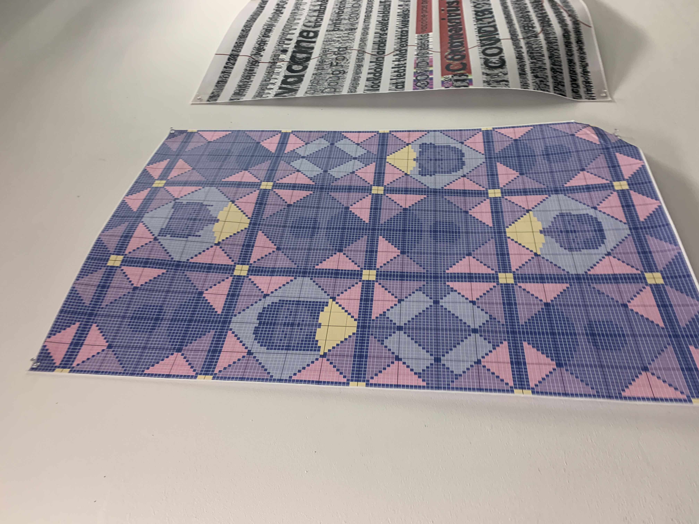

Confounding Tools Poster, 2022
I created this poster for a class assignment. The brief was to design a 24” × 36” digital poster about either 1) your life under COVID 19 or 2) how you see the future of design without using software explicitly intended for design. This poster was created inspired by COVID isolation throughout the pandemic and how so much of my socialization was through screens and layers of separation. I tackled themes of loneliness and isolation despite digital connectivity for this poster, and incorporated another layer to it as well using unothodox design tools. I created the poster using a pattern making software clled Stitch Fiddle. During the pandemic, since there was a lot of isolation, I spent a lot of time crocheting, so I chose this tool as an homage to that aspect of the pandemic.